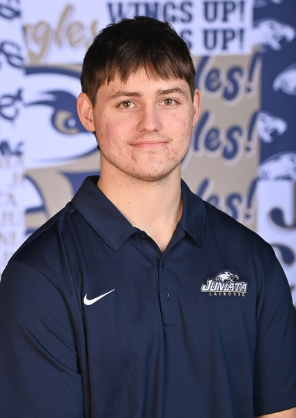

Our Team
Birds of Prey was founded by two athletes who believed there was a gap in the market for lacrosse gear that was both high-performing and affordable. We are students, players, and entrepreneurs who are passionate about growing the game.
Griffin Umstead
Co-Founder and Head of Product
Griffin has been playing lacrosse since youth and brings a player-first perspective to every product decision. He oversees equipment design and quality standards.

Zack Waslosky
Co-Founder and Head of Marketing
Zack handles the brand identity and outreach strategy for Birds of Prey. His background in business gives the brand a strong foundation for growth and partnerships.
Our Story
Birds of Prey started as a conversation between two lacrosse-playing business students who were frustrated with gear that was either overpriced or poor quality. We decided to build a brand that treated athletes with respect, offering premium products at fair prices.
The name Birds of Prey comes from the idea of athletes who are focused, fast, and relentless in pursuit of their goals. The navy blue and gold colors represent the loyalty and excellence we want every player to feel when they put on our gear.
Though we are still early in our journey, Birds of Prey is committed to growing alongside the lacrosse community. We are proud to support players at the youth, high school, and college levels.
Our Values
- Performance: Every product is tested by players before it goes to market.
- Integrity: We are honest about what our gear does and does not do.
- Accessibility: Great gear should not require a professional contract to afford.
- Community: Lacrosse is a sport built on teamwork, and we reflect that in how we operate.
Trusted Lacrosse Organizations
Birds of Prey is proud to align with the values of the following organizations:
- US Lacrosse - The national governing body for the sport
- Inside Lacrosse - Leading coverage of the lacrosse community
- Lax All Stars - Culture, gear, and highlights from across the game
Learn More About the Team
Type a founder's first name below to read their full bio.